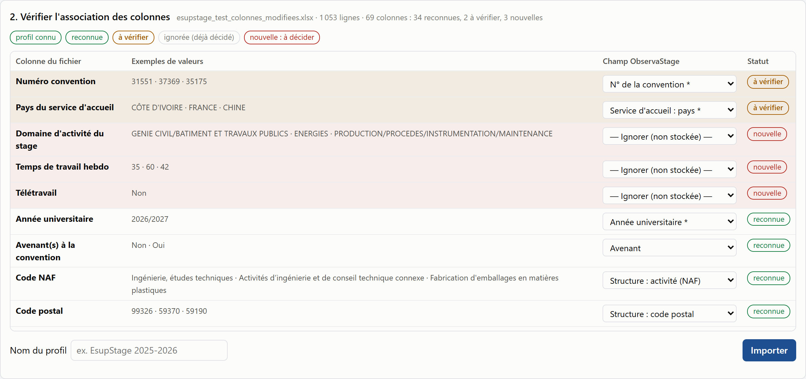
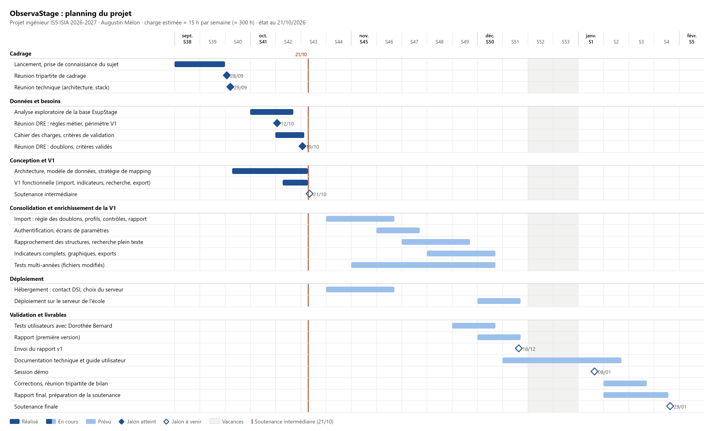

Structure. La Direction des Relations Entreprises (DRE) de Polytech Lille gère les conventions de stage de toutes les formations de l'école : PEIP, licences, masters, cycle ingénieur. Depuis l'année 2025-2026, les conventions sont saisies dans EsupStage, l'application nationale de gestion des stages des universités. Dorothée Bernard gère seule ces conventions. Elle travaille avec deux personnes chargées d'aider les étudiants à trouver un stage, une dizaine d'assistants pédagogiques et un responsable de stage par formation.
Problème. EsupStage sait gérer une convention, mais pas exploiter l'ensemble des conventions. La seule possibilité est d'extraire un fichier Excel de 71 colonnes par année universitaire. Aujourd'hui, environ 80 % des questions posées à la DRE sur les stages (durée moyenne, part à l'étranger, stages en Hauts-de-France, répartition par spécialité, etc.) restent sans réponse. Pour les autres, chaque réponse demande une extraction et un traitement manuel d'environ 30 minutes. Ces données pourraient pourtant servir à la direction (indicateurs, contrôles), aux enseignants (thématiques de stage) et aux futurs stagiaires (structures d'accueil).
Équipe. Je mène ce projet seul. Dorothée Bernard, tutrice référente, exprime le besoin et valide les règles métier. Marie-Éléonore Kessaci, tutrice école, encadre la démarche et a anonymisé les données de travail. Bastien Cazaux, expert technique, a validé les choix d'architecture. Le projet s'inscrit dans le système d'information de l'école, dont les applications sont développées en PHP, JavaScript et PostgreSQL.
Objectif. Concevoir et réaliser un prototype d'application web qui importe les extractions EsupStage, les contrôle, les structure dans une base de données et permet de les explorer : indicateurs, recherche multicritère, export. L'utilisatrice de la V1 est Dorothée Bernard. D'autres profils (enseignants, étudiants) sont envisagés plus tard.
Difficulté centrale. Le format des extractions peut changer d'une année à l'autre : colonnes renommées, déplacées, ajoutées ou supprimées. L'import ne doit donc pas être codé « en dur ». Il doit s'adapter sans modification du code, par un paramétrage que l'utilisatrice, non informaticienne, peut faire elle-même.
| Priorité | Fonctionnalités |
|---|---|
| Indispensable | Import d'un fichier EsupStage avec mapping configurable et profil réutilisable · contrôles et rapport d'anomalies · indicateurs (nombre de stages, durée moyenne en jours, semaines et heures, France / étranger, Hauts-de-France, par niveau, spécialité et année) · recherche multicritère · export CSV et XLS |
| Souhaitable | Historique sur plusieurs années · recherche plein texte (sujet, missions) · graphiques · rapprochement des structures sans SIRET |
| Bonus | Indicateurs « recherche » et « secteur » · type d'expérience (CDD, intérim, bénévolat) |
| Hors V1 | Gratification · gestion de plusieurs profils d'utilisateurs |
| Notion | Règle retenue |
|---|---|
| Conventions comptées | Seules les conventions validées (« Validation convention = Oui ») entrent dans les indicateurs ; toutes sont importées. La règle est paramétrable. |
| Durée | En jours et semaines à partir des dates, en heures à partir de la durée déclarée (unité vérifiée sur les données). |
| Étranger / Hauts-de-France | Pays du service d'accueil (lieu réel du stage) ; département du code postal ∈ {02, 59, 60, 62, 80}. |
| Recherche / secteur | Mots-clés « recherche », « R&D » dans le sujet ; le secteur est la thématique EsupStage. |
| Valeurs aberrantes | Heures hebdomadaires ≤ 0 ou > 48 (durée légale maximale), durée nulle : signalées et exclues des calculs, jamais corrigées. |
Livrables : prototype fonctionnel, architecture et modèle de données, stratégie d'import, documentation technique et guide utilisateur. Critères de validation proposés à la DRE, qui devra les confirmer :
Les règles métier (validation retenue, seuil d'heures, départements, mots-clés) sont stockées dans une table de paramètres et appliquées dans une seule vue SQL. Elles se modifient sans toucher au code.
L'analyse exploratoire de l'extraction 2025-2026 (1053 conventions, 939 étudiants, 71 colonnes) a montré plusieurs pièges :
À l'import, chaque colonne du fichier est associée à un champ cible du modèle, ou ignorée (elle n'est alors pas stockée). La suggestion automatique suit quatre niveaux de confiance :
L'utilisatrice valide l'association en voyant des valeurs d'exemple, sauf pour les colonnes personnelles, qui sont masquées. Son choix est enregistré comme profil réutilisable. L'import est idempotent sur la clé (année universitaire, N° de convention) : un réimport met à jour au lieu de dupliquer.

Pour vérifier les indicateurs (critère 2), un script Python indépendant applique les mêmes règles au fichier d'origine. Un second script compare automatiquement ses résultats à ceux de l'application. L'ébauche obtient 47 indicateurs identiques sur 47. Exemples sur les 884 conventions validées : durée moyenne de 14,4 semaines (101 jours, 493 heures), 24,7 % des stages à l'étranger, 39,1 % en Hauts-de-France.
Le suivi repose sur un tableau Trello partagé avec les tutrices et la responsable de projet, un mail récapitulatif hebdomadaire et des réunions régulières avec la DRE. Chaque réunion fait l'objet d'une préparation et d'un compte rendu. Le code et les documents sont versionnés avec Git. Le développement se fait dans des conteneurs Docker (PHP et PostgreSQL), qui reproduisent l'environnement cible.
| Date | Étape | Résultat |
|---|---|---|
| 14/09 | Lancement, prise de connaissance du sujet | Contexte et jalons identifiés |
| 28/09 | Réunion tripartite de cadrage | Circuit d'anonymisation des données, besoins types |
| 29/09 | Réunion avec l'expert technique | Architecture et stack actées |
| S41-S42 | Analyse exploratoire de la base anonymisée | Constats sur les données, chiffres de référence |
| 12/10 | Réunion DRE : règles métier, périmètre | 14 décisions, périmètre V1 validé |
| S42-S43 | Conception et ébauche technique | Import, mapping, indicateurs, recherche, export fonctionnels |
État au 21/10. La conception est stabilisée. L'ébauche couvre déjà le chemin complet du fichier à l'export. Les fonctionnalités indispensables existent sous une forme simple, sans authentification ni écrans d'administration.
L'ébauche étant en avance sur le calendrier initial, je revois les ambitions à la hausse pour les fonctionnalités souhaitables (recherche plein texte, rapprochement des structures par similarité avec pg_trgm, graphiques, historique). À l'inverse, l'indicateur « type d'expérience » restera partiel : il n'est renseigné que dans un texte libre, pour 164 conventions. Prochaines étapes : faire valider les critères de validation et la table des niveaux (S43), consolider l'import (S44-S46), ajouter l'authentification et les écrans de paramètres (S46-S47), contacter la DSI pour l'hébergement (S44-S45, principal risque), puis faire tester l'outil par la DRE avant la session démo du 08/01/2027.
| Risque | Impact | Mesure |
|---|---|---|
| Hébergement non disponible à temps | Élevé | Contact DSI dès S44 ; application conteneurisée, déployable sur tout serveur de l'école |
| Format des futures extractions inconnu | Moyen | Fichiers de test modifiés ; mapping et règles paramétrables sans code |
| Règles métier encore ouvertes (validation, « recherche ») | Moyen | Règles stockées en paramètres, modifiables en une ligne ; chiffres comparés systématiquement |
| Disponibilité de l'utilisatrice pour les tests | Moyen | Tests planifiés dès début décembre, avant la session démo |

Métier visé : data engineer. Le cœur de la mission est de construire un pipeline d'ingestion de données robuste : lire des fichiers hétérogènes dont le schéma évolue, les mapper vers un modèle cible, contrôler et tracer la qualité des données, et alimenter une base relationnelle qui sert des indicateurs fiables. Cela correspond directement aux activités d'un data engineer : conception de pipelines ETL, modélisation de données, qualité des données, gouvernance et conformité RGPD (minimisation, pseudonymisation).
Le projet mobilise aussi des compétences d'ingénieur logiciel (architecture applicative, API, interface web) et d'analyse de données (exploration, définition d'indicateurs avec le métier). Elles restent au service de la chaîne de données, qui fait la difficulté et la valeur du projet.